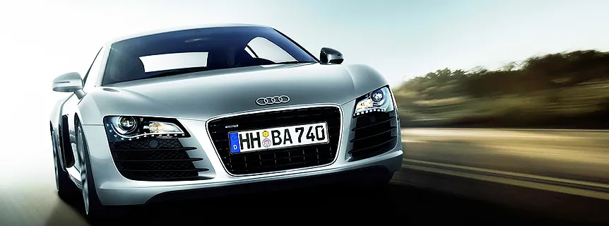

Немецкая автомобилестроительная компания в составе концерна Volkswagen Group, специализирующаяся на выпуске автомобилей под маркой Audi. Штаб-квартира расположена в Ингольштадте. Председатель совета директоров - Маттиас Мюллер. Объём производства в 2015 г. составил около 1 830 334 автомобилей. В 2012 г. немецкие специалисты по автомобилям сделали рейтинг лучших подержанных авто. Авто марки Audi признали лучшей среди подержанных авто.

Обслуживаемые автомобили
| 100 | 200 | 50 | 80 | 90 | 920 |
| A1 | A2 | A3 | A4 | A4 allroad | A5 |
| A6 | A6 allroad | A7 | A8 | Cabriolet | Coupe |
| NSU RO 80 | Q3 | Q5 | Q7 | quattro | R8 |
| RS2 | RS3 | RS4 | RS5 | RS6 | RS7 |
| RS Q3 | S1 | S2 | S3 | S4 | S5 |
| S6 | S7 | S8 | SQ5 | TT | TT RS |
| TTS | V8 |
Чем так выделяется автомобиль Audi?
Автомобили Audi можно охарактеризовать двумя качествами:
- харизматичным внешним видом;
- превосходными ходовыми характеристиками.
Но время неумолимо и к этим надежным автомобилям – даже самый надежный механизм со временем выходит из строя, у каждого автомобиля – свой предел работы на отказ. О том, когда это произойдет, можно сказать – через 5 лет, через 10 лет… Опять же многое определяется качеством сборки и тех условий, в которых эксплуатировали автомобиль. Причиной поломки может стать дорожно-транспортное происшествие, вандализм и т.п.
Как бы то ни было, но ремонт Audi в этом случае будет просто необходим! Тут просто не обойтись без помощи профессионалов. Вообще ремонт данной марки автомобилей даже для опытных мастеров представляет некоторую трудность. Важно привлечь специалиста, который не всю жизнь ковырялся под отечественными авто, а того, кто в полной мере разбирается в высокотехнологичной начинке Ауди. Мы гарантируем, что проведем профилактические и ремонтные работы на должном уровне:
- диагностика, ремонт и обслуживание автоматически и механических коробок передач (МКПП/АКПП);
- полная замена масла в АКПП;
- диагностика, ремонт и обслуживание топливных систем дизелей;
- обслуживание и ремонт ходовой и тормозной систем;
- исправление геометрии кузова.

Есть вопросы — спрашивайте!
Не стесняйтесь, Наши специалисты помогут Вам, окажут бесплатную консультацию или запишут на посещение Нашего автосервиса.
Отзывы клиентов
Вчера 07.04.2024 около 13.00 приехал на сервис. Подозревал проблемы с задним суппоротом, скрип и перегрев. Приняли по моей просьбе без записи, за что большое спасибо. Сденлана дигностика продвески, выявили в ноль сточившиеся колодки и изношенные диски. Предыдущий серсви в ноябре ни о чем подобном не предупреждал. В общем и целом замена дисков с колодками (в наличии на складе TRW), по времени около часа или чуть больше, крепление тормозных щитков и подтяжка переднего подрамника, ослабленного предыдущим сервисом при регнулировке сход-развал. Общая сумма за запчасти и работы 18950 руб. Спасибо особое автомеханику выполнявшему работы Александру Строеву. Показал, рассказал, пояснил. Можно было увидеть все сделанное и даже в видеозаписи. Спасибо за работу. Думаю перейти на постоянное обслуживание в этот сервис.
Александр
Модель авто: Шкода Суперб
08.04.2024
Комментарий администратора: Здравствуйте, Александр!Рады, что Вы остались в целом довольны качеством наших услуг, спасибо за отзыв. Удачи на дорогах!
С наилучшими пожеланиями,
Администрация VWS
Прекрасная смена слесарей, диагностов и особенно мастеров от 04.11.2023г. Оперативно подошли к вопросу и четко ее решили в коротки период времени. СПАСИБО БОЛЬШОЕ СЕРВИСУ VWS. Постоянное обслуживание у Вас это радость для меня и для машины.
Роман
Модель авто: Шкода Октавия 585
08.11.2023
Комментарий администратора: Здравствуйте, Роман!Мы рады, что Вы остались в целом довольны качеством наших услуг, спасибо за отзыв.
Удачи на дорогах!
С наилучшими пожеланиями,
Администрация VWS
Смотрите также
Контакты
- г. Москва, 1-й Дорожный проезд, д. 5АЮАО Москвы. Ближайшее метро — «Южная»
- Ежедневно с 8:30 до 20:30Без выходных. Приём автомобилей — круглосуточно
- +7 (495) 260-06-02Эвакуатор: +7 (495) 796-29-99